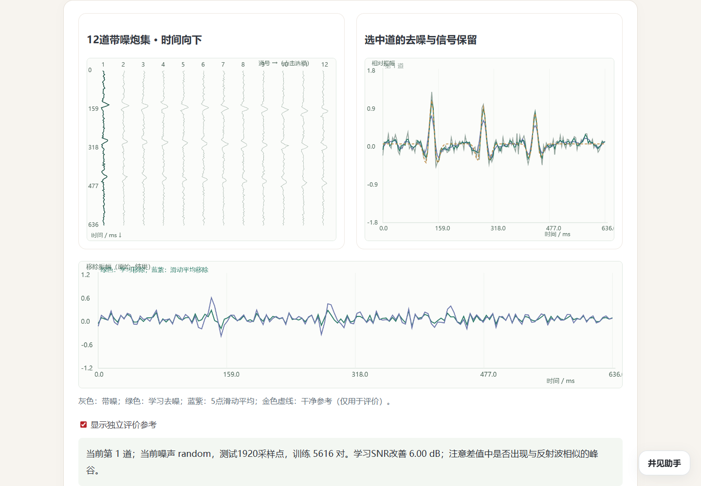
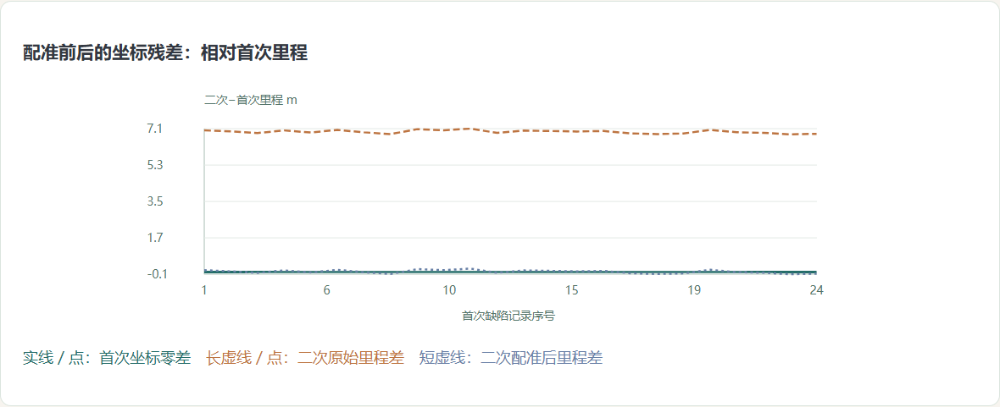
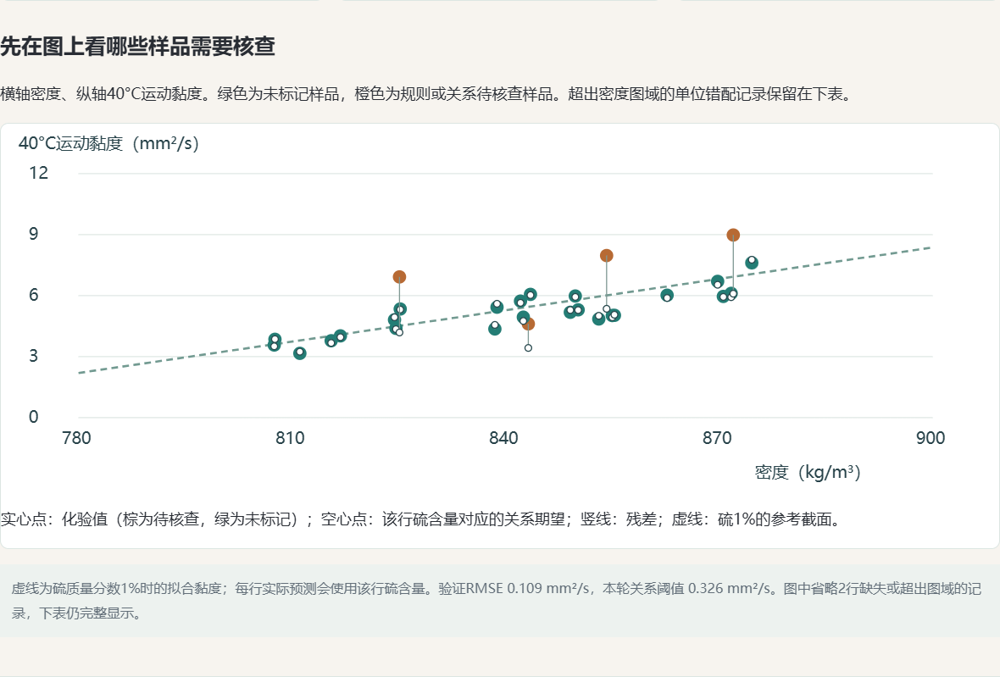
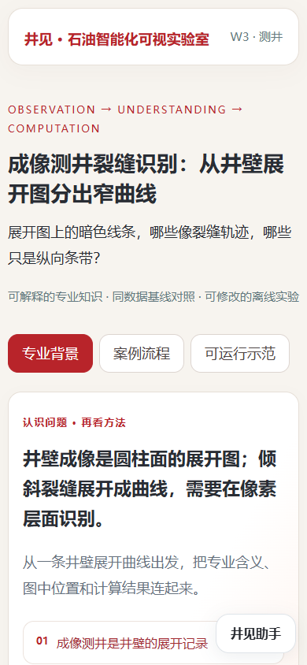
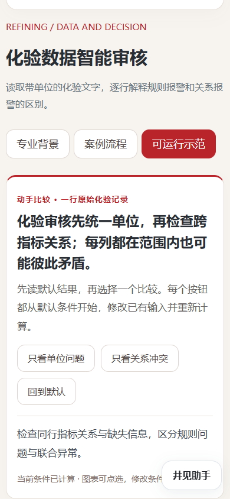
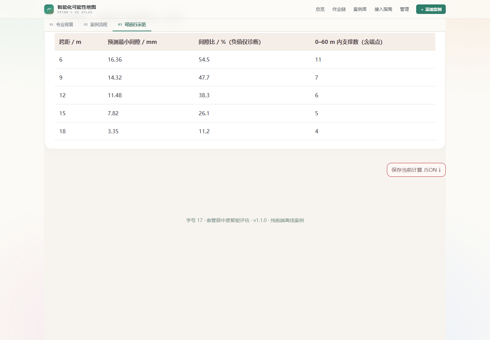

完成了什么
每例保留原有专业段落、来源、图表与计算，补充一句核心认识、三条读图提示和两项具体比较。默认直接计算，相关条件自动更新，完整统计和保存退到阅读之后。流程继续用本例的图、表和分支表达方法，未改造成56张相同的大画卷。
源码／契约检查 118 项；实际Chrome 556 项。两种证据分别记录。
案例包1.1.0 · 2026-10-29 · 本轮不新增AI图片，保留录井五例、首页与老师原站。
每例保留原有专业段落、来源、图表与计算，补充一句核心认识、三条读图提示和两项具体比较。默认直接计算，相关条件自动更新，完整统计和保存退到阅读之后。流程继续用本例的图、表和分支表达方法，未改造成56张相同的大画卷。
源码／契约检查 118 项；实际Chrome 556 项。两种证据分别记录。
去噪同时看原始、处理后与移除量；腐蚀评估把两次内检测先对齐；化验审核分开单位与跨指标关系。图中结果由已有引擎真实重算。






56例都运行了桌面默认计算、两项比较、流程键盘切换与复位。抽3例检查断网file://和390px，抽4例经原站添加案例目录导入，刷新后再次计算并保存；增强门户检查3例，并回归m2和原firstbreak样例。共保存7份实际JSON。
没有逐例完成56例的所有路径和所有参数组合，也没有重新评估现场模型表现。查看范围与下载记录、源码检查、内容整理记录。失败尝试保留在attempts/。